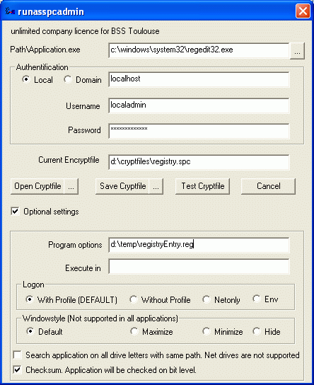
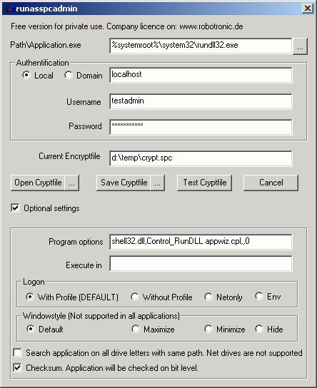

Guidance RunasSpc
You can call runasSpc directly like the following command
runasspc.exe /program:"C:\Program Files\Windows
NT\Pinball\pinball.exe"
/domain:"localhost" /user:"testadmin" /password:"password"

There is no security check and the password is in cleartext
If you want to encrypt the logonaccount you must configure an
encryptfile
with runasSpc.exe (on commandline) or
runasSpcAdmin.exe (on graphical user interface).
Take a look below on
>>Samples to build an encryptfile<<:
After you have build a encryptfile, you can call the encryptfile with
runasspc.exe
like the following possibilities
A) If the name of the encryptfile is >>crypt.spc<< you can
start it with a doubleclick on runasspc.exe.in the same directory.
B) Drag your cryptfile and drop it on runasspc
C) On commandline without a startup dialog of runasspc >>
c:\path\runasspc.exe
/cryptfile:"path\NameOfCryptfile.spc" /quiet<<
D) Make a shortcut like >> c:\path\runasspc.exe
/cryptfile:"path\NameOfCryptfile.spc"<<
E) Link the file extension of the cryptfile to runasspc.exe (open
with).You can also use your own file extension
Samples to build an encryptfile:
With: RunasSpc.exe
You can find samples to build an encryptfile with runasSpc.exe in the
file sample.bat or call >> runasspc.exe -h << to get help
With RunasSpcAdmin.exe
To start the game pinball.exe under the local useraccount administrator

To run the Excel document molecularWheigtCalculation.xls under
domainaccount departmentuser

To install a msi file like acdSee 4.0.msi

Call a msc file like the computerconsole

To run a vbs script

Insert a registry entry

To start a batchfile like *.bat or *.cmd

To install Java with parameters /S /V /qn

To run a Batchfile with some options like optionA optionB optionC

To use environment variables

Call with rundll32 the >>>Add / Remove programs
applet<<<
